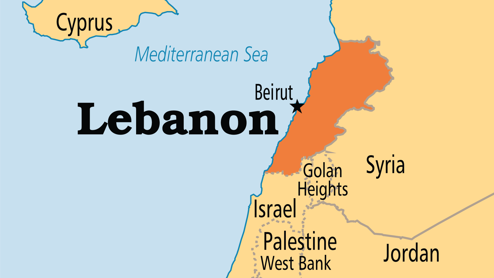
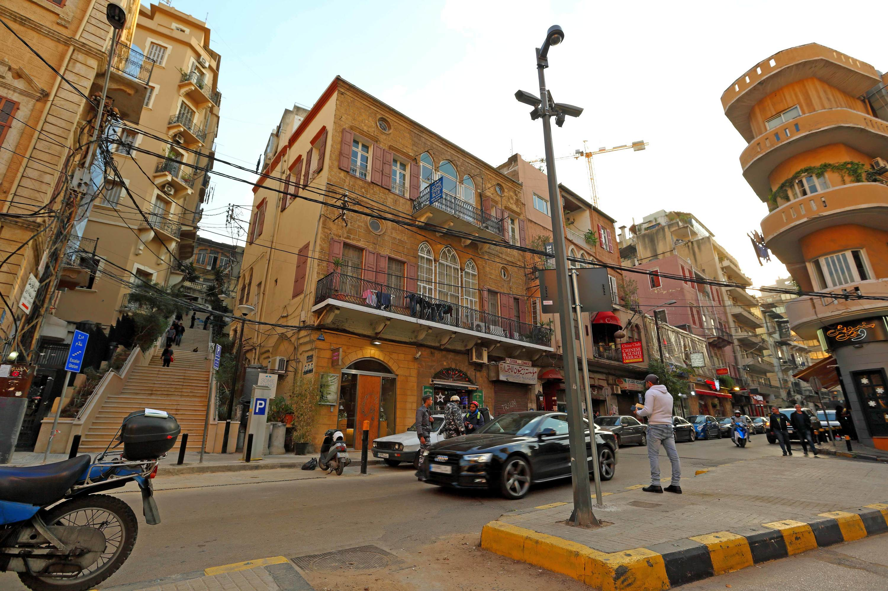
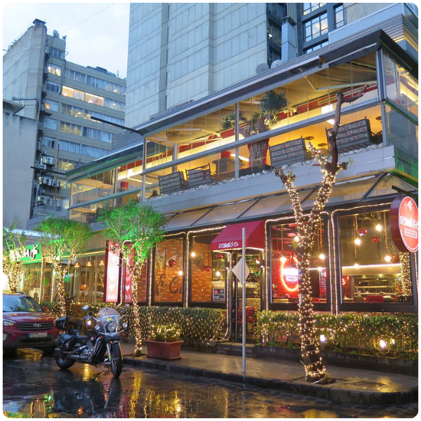
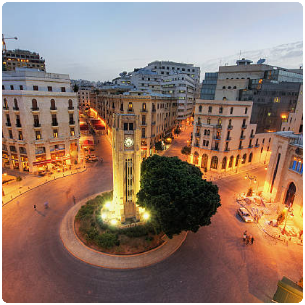
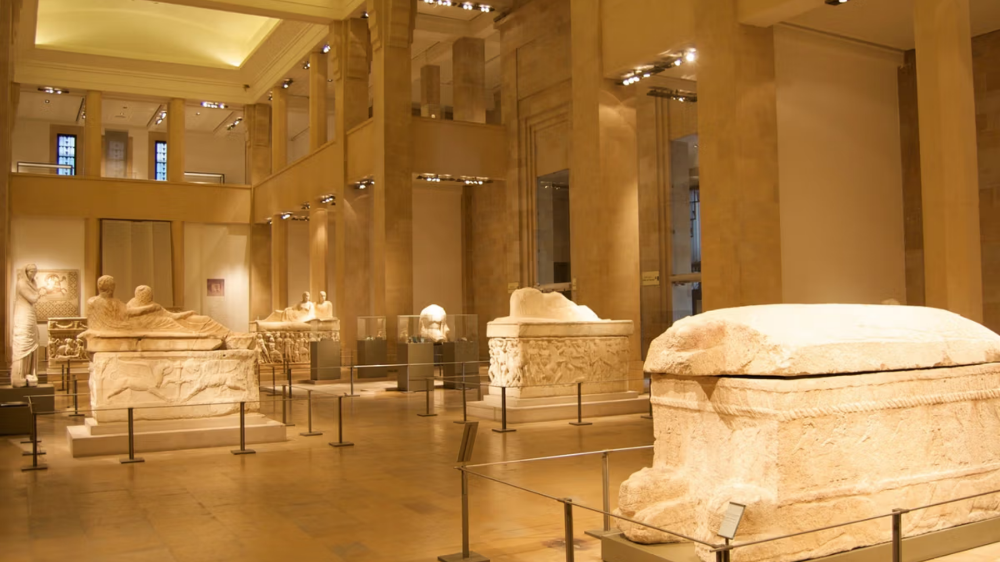
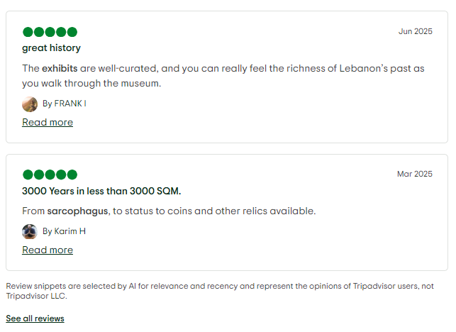
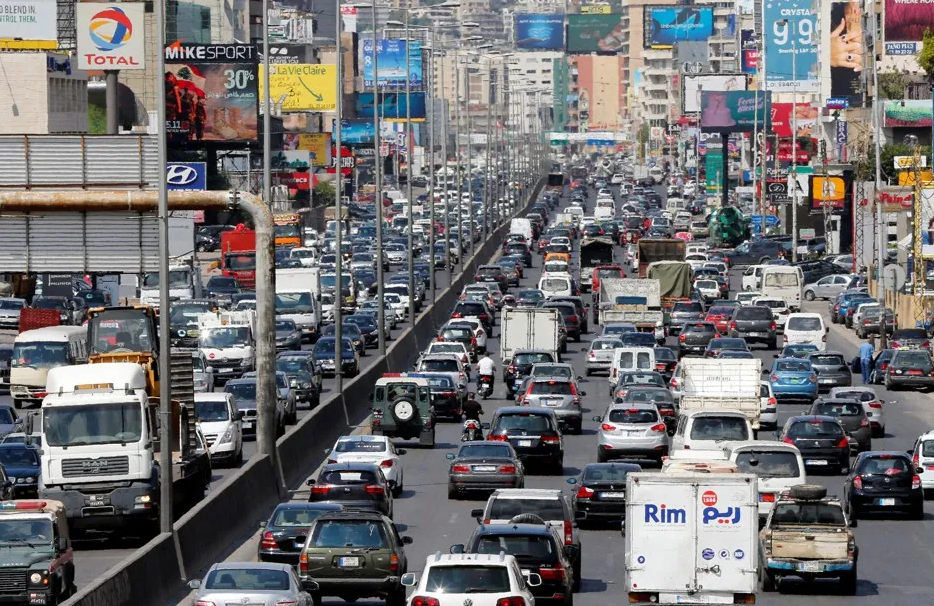

Ministry of Tourism Lebanon
DISCOVER LEBANON
Beirut Governorate is the smallest of Lebanon's nine governorates by land area — but what it lacks in size, it more than compensates for in density, energy, and significance. The city sits on a small peninsula that juts into the eastern Mediterranean, giving it a coastline on three sides and a direct view of the sea from almost everywhere in the city center.
Unlike other Lebanese governorates, Beirut is entirely urban. There are no mountain villages or rural valleys here — just a compact, layered, endlessly complex city that has been continuously inhabited for over 5,000 years. Layer upon layer of Phoenician, Hellenistic, Roman, Byzantine, Arab, Crusader, Ottoman, French, and modern Lebanese history is literally buried beneath the streets.
The climate is classic Mediterranean — hot, humid summers and mild, rainy winters. The sea breeze softens the summer heat, and the city rarely sees snow. Beirut is a year-round destination, though spring and autumn are particularly beautiful times to visit.


These two adjoining neighborhoods on the eastern slope of Beirut are the heartbeat of the city's creative scene. Ottoman-era buildings with arched windows and colored glass house art galleries, independent cafés, bookshops, and some of Beirut's most beloved restaurants. Despite the 2020 port explosion devastating much of the area, the community has been slowly and defiantly rebuilding.

Hamra was once the cultural and intellectual capital of the Arab world — its cafés filled with poets, revolutionaries, and academics in the 1960s and 70s. Today it retains that bohemian energy. The main street is lined with bookshops, old cinemas, juice bars, and student hangouts surrounding the American University of Beirut — one of the most prestigious universities in the region.

Destroyed during the civil war and painstakingly reconstructed in the 1990s, Downtown Beirut is a strange and fascinating place — grand Ottoman and French Mandate architecture fully restored, sitting beside excavated Roman ruins right in the open air. The Mohammed Al-Amin Mosque and the Saint George Cathedral stand almost side by side, a quiet symbol of Lebanon's complex identity.

Ashrafieh is East Beirut's most elegant and historically Maronite neighborhood — a maze of tree-lined streets, 19th-century villas, hidden staircases, and neighborhood churches. It is home to the iconic Sursock Museum, one of Lebanon's finest art museums, and its streets have a quieter, more residential feel compared to the bustle of West Beirut.

The National Museum is Lebanon's most important archaeological institution, housing thousands of artifacts spanning 5,000 years of civilization — from prehistoric flint tools to Phoenician sarcophagi, Byzantine mosaics, and Islamic-era gold. The building itself is a beautiful example of 1930s neo-Egyptian architecture. A visit here is essential for understanding the depth of what Lebanon has been.
The Raouché sea rocks — two massive natural arches rising from the sea off Beirut's western shoreline — are perhaps the city's most recognizable image. At sunset, the light turns the rocks amber and the sea below them deep violet. The Corniche promenade alongside Raouché is where Beirutis come to walk, smoke arguileh, and watch the day end — one of the most beloved rituals in the city.


Stretching for several kilometers along Beirut's seafront, the Corniche is the city's great equalizer — a public promenade where everyone walks together regardless of religion, class, or neighborhood. Joggers, families, fishermen, vendors selling corn and coffee, and couples watching the sunset all share this strip of seafront. It is one of the most honest and human places in all of Beirut.
In the heart of Downtown Beirut, excavations during postwar reconstruction revealed an extraordinary find — a Roman hippodrome, ancient streets, Phoenician remains, and Byzantine churches, all layered on top of each other. Much of this is preserved and accessible in open-air archaeological gardens right in the city center, making Beirut one of the rare places in the world where you can stand in a modern city and look down into 3,000 years of history.

Beirut is Lebanon's main entry point for international travelers and the hub from which all other governorates are reached. The city is compact and most major sites are within a short drive or walk of each other.
Beirut–Rafic Hariri International Airport sits just south of the city and handles all international arrivals. It is one of the busiest airports in the Arab world, with direct connections to major cities across Europe, the Gulf, and beyond. From the airport, the city center is only 20 to 30 minutes by taxi.
Beirut is connected to all other Lebanese governorates by a network of highways. Traffic in the city itself can be heavy, particularly during peak hours. Ride-hailing apps and taxis are widely available and the most practical way to get around within the city.
Many of Beirut's most interesting neighborhoods — Gemmayzeh, Mar Mikhael, Downtown, Hamra, Ashrafieh — are best explored on foot. The city is hilly in places, but compact enough that walking between areas is often the most rewarding way to discover it.
Beirut has no metro or formal public transit system. Traffic congestion is a serious issue, especially in the morning and evening. Build extra time into any journey across the city, and consider walking whenever the distance allows it.

Beirut is not a city you visit — it is a city that happens to you. It is loud and quiet, broken and beautiful, frustrating and magnificent, sometimes all within the same hour. There is no other city quite like it.
Walk the Corniche at dawn before the city wakes up — just the sea, the fishermen, and the distant sound of the call to prayer mixing with church bells.
Get lost in Gemmayzeh's side streets, stop for a coffee in a crumbling Ottoman villa, and find an art gallery you never knew existed.
Eat your way through the city — from a Lebanese breakfast of labneh and zaatar in a neighborhood bakery, to a long mezze lunch overlooking the sea.
Visit the National Museum and spend a morning inside 5,000 years of civilization compressed into one beautiful building.
Watch the sun set from the Corniche at Raouché — the rocks turn gold, the sea turns dark, and for a moment, the city feels completely at peace.
